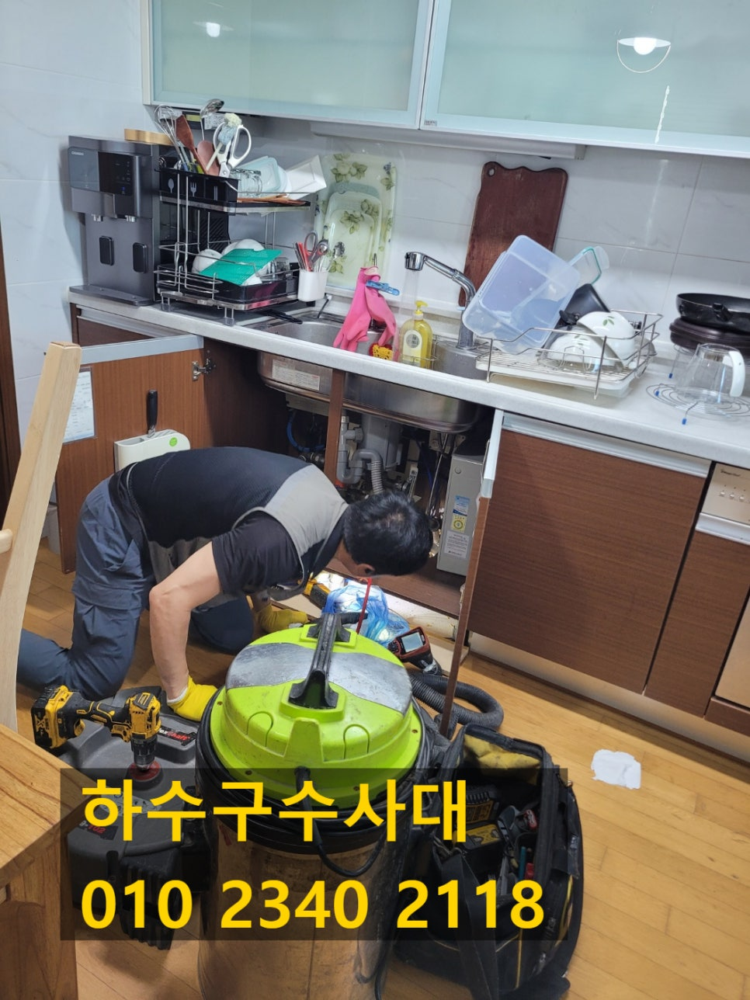
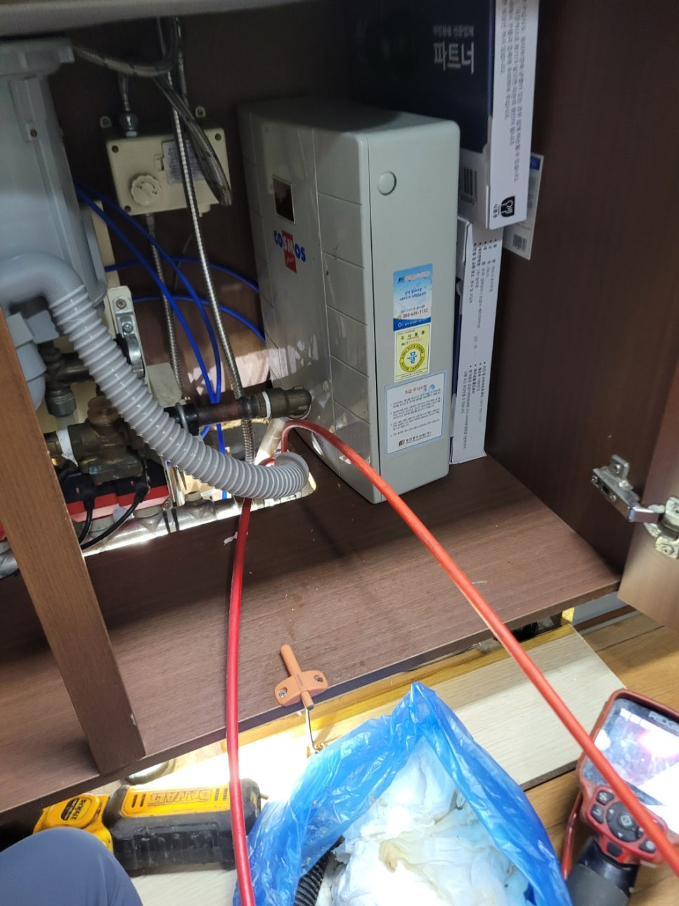
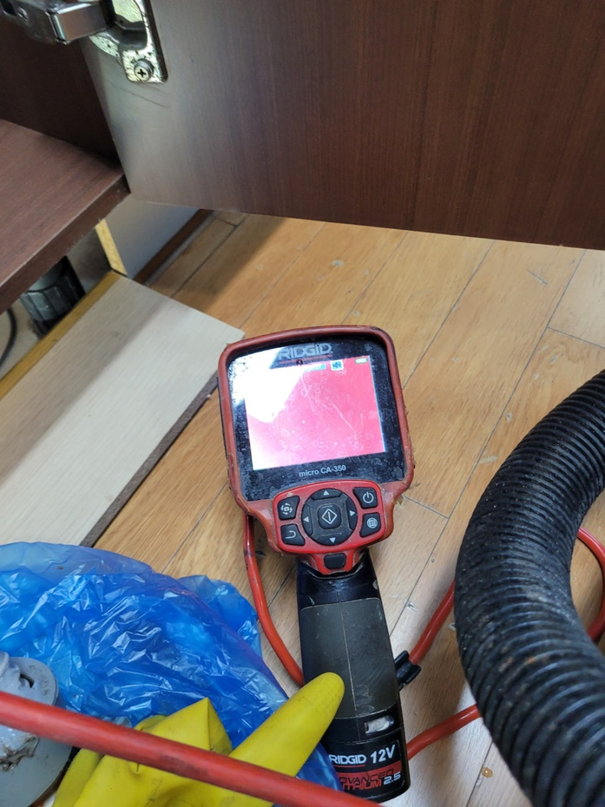
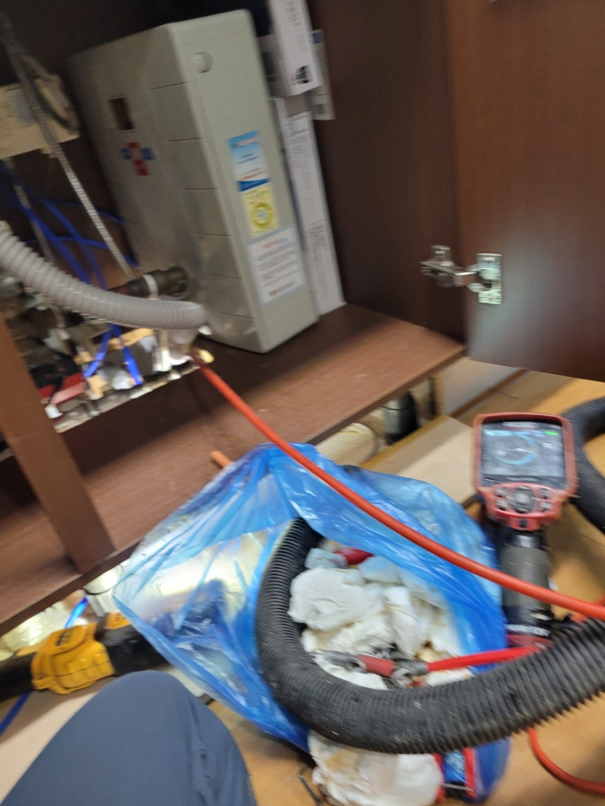
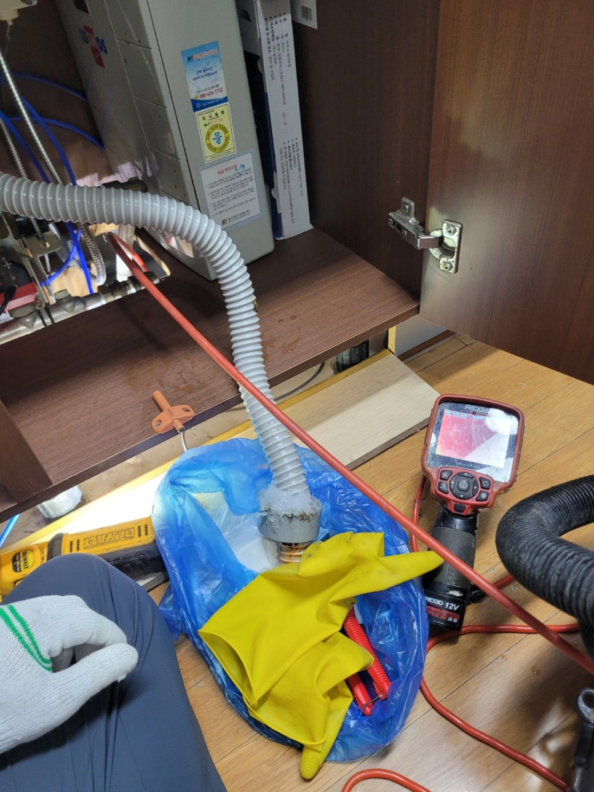
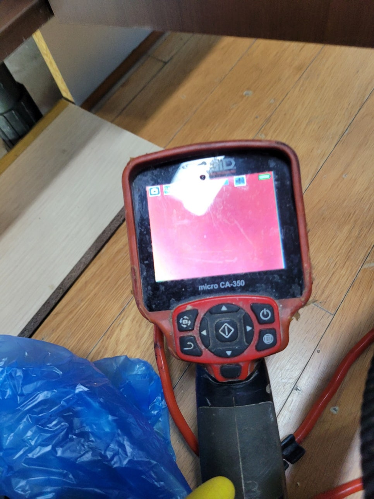
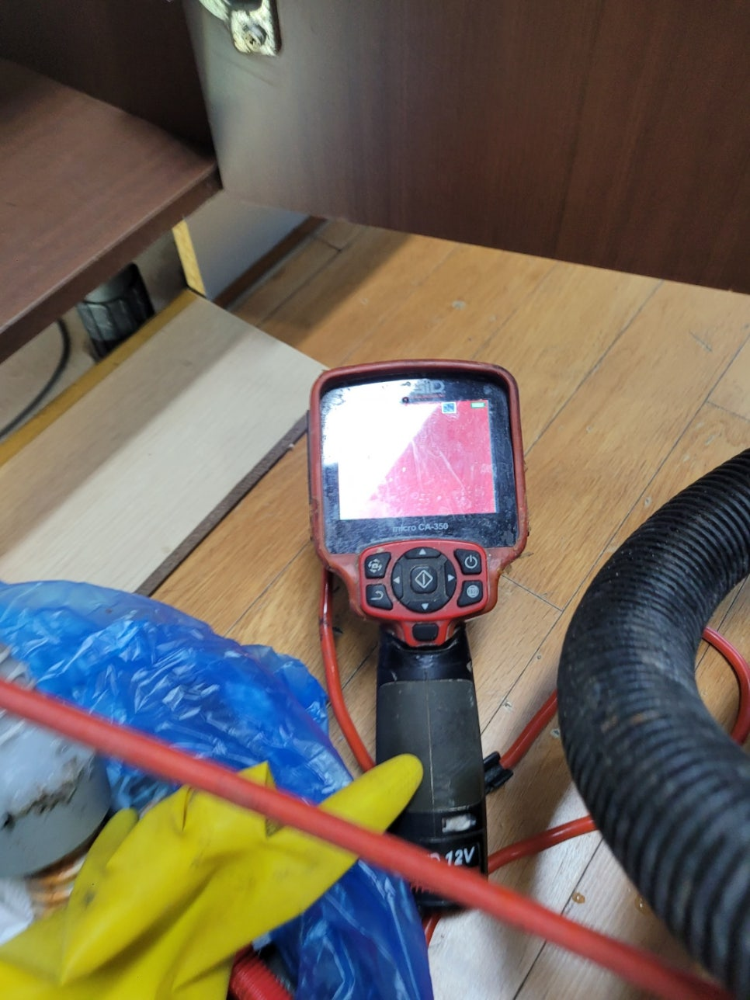

🏠 동탄 반송동 싱크대배수관막힘 석우동 하수구뚫는 설비업체
화성 석우동 싱크대막힘 전문 시공 후기

📋 작업 개요
- 위치: 화성 석우동, 석우동, 화성
- 서비스 유형: 싱크대막힘, 변기막힘, 하수구막힘, 배관막힘, 맨홀막힘, 누수수리, 역류해결, 뚫는업체, 배관청소
- 작업 일시: 2025. 7. 14. 9:52
- 업체명: 하수구수사대 (010-5615-2118)
🔍 문제 상황
안녕하세요.
배관전문업체 "하수구수사대" 입니다.
동탄 반송동 싱크대배수관막힘 석우동 하수구뚫는 설비업체
생활하면서 갑자기 트러블이 발생하게 되면 다들 굉장히 염려하시죠.
특히나 물을 많이 사용하는 부엌이나 화장실에서 갑자기 막히는 문제가 생겨서 물을 아예 사용할 수 없는 상황이 되었을 경우 최대한 빨리 전문 업체에 의뢰하시는 게 현명한 방법입니다.
싱크대에 물이 고이는 문제가 생긴다면 음식을 하고 식재료를 다듬는 등의 작업에 차질이 빚어지죠.
거기다 먹은 그릇들을 설거지도 힘들어지므로 막히기 시작하면 신속하게 전문가를 부르는 것이 좋다고 말씀드려요.
지난 주에도 아파트 사시는 고객님 댁에 싱크대 막힘 현상이 생겨서 정확하게 점검하고 해결해 드렸어요.
이번 현장에서는 싱크대를 교체한 지 얼마 되지 않았는데도 이런 막힘 현상이 발생했다는 게 의아했거든요.
고객님이 셀프로 해결할 수 없는 부분이라서 전문 업체인 저희들에게 전화하신 듯 합니다.
현장을 방문해 첫 번째로 확인해 본 곳은 싱크대 하부장 아래쪽이었습니다.
싱크대 아래쪽은 벌써 물이 넘쳐서 축축하게 젖어있었고, 그 양도 아주 많은 듯 했어요.

🔎 원인 분석
💡 전문가 진단: 정밀 진단 장비를 사용하여 슬러지의 고착 여부를 판명하고 타격/세척 작업을 실시했습니다.
만약 이 상태로 그냥 방치하면 곰팡이가 생길 뿐만 아니라 아래층에도 누수가 발생할 수 있기 때문에 즉시 작업을 진행했습니다.
첫 번째 작업으로 싱크대 아래에 연결된 주름관을 떼어내고 들여다 보니 역시 이물질이 가득 차 있는 모습이었어요.
까만색 얼룩이 찌꺼기인데 이게 주름 안쪽에 달라붙어 있어요.
또한 하수도 입구쪽까지 이것들이 잔뜩 붙어있는 상태였으므로 이를 제거할 수 있도록 석션기를 사용하기로 했어요.
석션기는 주름관의 이물질은 물론 하수관 내부에 있는 찌꺼기들까지 제거할 수 있는 기계인데 이같은 막힘 문제를 해결하기에 적합하죠.
이물질 때문에 입구 부분이 막힌 상황도 이 석션기만 있으면 얼마든지 해결할 수 있고요.
본격적으로 배관을 뚫기 전 석션작업으로 하수관 내부를 먼저 청소하는데, 막힘 해결에 적절한 방법을 파악하기 위한 중간 과정으로 보시면 됩니다.
석션기를 세게 돌려보아도 막힘 현상이 해결되지 않아서 하수관 속을 한 번 더 살펴봐야 했습니다.
이번에는 배관 내시경 카메라를 통해 깊숙한 부분의 상태를 점검하는 것인데요.
지금 이 화면에서는 모든 게 빨갛게 보여지죠.
설비 헤드쪽에 전등이 달려 있어서 그 전등으로 기름때를 비춰보면 이렇게 빨간색으로 보이게 됩니다.
그러니까, 하구관 내에 기름찌꺼기가 쌓인 경우 모니터로 봤을 때 빨간 부분으로 나타납니다.
보다 정확하게 확인해 보니 배관 청소가 엉망인 듯 했습니다.

🔧 작업 과정
이번 현장에서 싱크대 물고임이 발생하는 것은 하수관 깊은 곳에 오랫동안 쌓여 온 기름때라고 판단했습니다.
저희가 보유한 것들 중 기름찌꺼기를 청소하기에 알맞은 장비를 이용해 완벽하게 해결해 드리기로 했죠.
제거 작업을 할 때 주로 이용하는 전문 장비 플렉스 샤프트를 준비했습니다.
샤프트 케이블 끝 부분에는 부착된 헤드가 체인 형태여서 단단한 덩어리들도 부셔서 흡입이 되게끔 만들어 줍니다.
샤프트를 이용해 작게 부수어 두면 처음에는 제거되지 않던 이물질도 모두 하수관 외부로 배출시킬 수 있거든요.
물론 배관의 상태와 이물질의 크기를 살피면서 장비를 움직여야 작업이 수월해집니다.
샤프트 작업을 할 때마다 배관 내시경 카메라를 통해 배관 상황을 구석
구석 체크하였고, 도중에 석션작업도 잊지 않고 기름때 없는 깨끗한 하수관이 되도록 노력했습니다.
저희들은 눈에 보이는 문제만 조치하고 마무리하지 않습니다.
문제가 나타난 확실한 이유를 찾아내고 조치하여 싱크대 막힘 현상을 해결하는 것은 물론 배관 안쪽까지 구석구석 살펴보고, 남아있는 슬러지도 제거했어요.
통수 테스트를 해 보니 물이 고이는 현상 없이 시원스럽게 흘러서 시공이 제대로 끝났음을 확인할 수 있었어요.
모든 작업이 끝나면 석션기의 통 안에는 배수관 내부에 쌓여있었던 기름찌꺼기들이 담기죠.
잘 살펴보면 아랫 부분에 각종 덩어리들이 가라앉아 있는 것을 확인할 수 있습니다.
이런 찌꺼기들은 하수관에 바로 흘려보내면 막히기 때문에 거름망으로 건더기들을 별도로 걸러준 후 각각 버리고 있어요.
일반적인 현장에서는 이 정도로 작업이 종료됩니다.
이번에 방문했었던 현장은 주름관 자체가 상당히 오래된 상태여서 쓸 수가 없었어요.
주름관을 새것으로 교환하고 나니 자꾸 반복되었던 싱크대 막힘 문제가 바로 해결되어 다행이었습니다.
가정의 싱크대가 지속적으로 막힐 경우 시중에 파는 하수관 세정제만으로는 뚫기가 어려워요.
그리고 슬러지가 두껍게 쌓여있다면 전문 장비를 이용해 안전하고 정확하게 작업할 필요가 있습니다.
전문업체의 도움을 받아 진행하셔야 깔끔하게 문제 해결이 가능합니다.


✅ 작업 완료
그러므로 내시경 장비나 막힘 해결 전문 도구를 보유한 업체를 이용하셔야 빠르게 작업이 진행됨을 잊지 마세요.
막힘 증상으로 인해 배관을 확인해야 할 경우 실력과 장비를 갖추고 있는 저희한테 연락주시면 빠르고 신속하게 해결해 드리겠습니다.
하수구수사대 010 2340 2118
경기도 화성시 동탄대로 677-10 7층 715-A10호
#반송동하수구막힘 #반송동싱크대막힘 #반송동싱크대역류 #반송동배수관막힘 #반송동배관뚫는곳 #반송동설비 #반송동맨홀막힘 #반송동하수구뚫는업체 #반송동변기막힘
#석우동하수구막힘 #석우동싱크대막힘 #ㅍ싱크대역류 #석우동하수구역류 #석우동화장실막힘 #설비 #석우동하수구뚫는곳 #석우동하수구뚫는업체 #석우동변기막힘




⚠️ 베란다 누수 및 방수 관리 방법
- ✅ 비가 많이 올 때 창틀 주변이나 아래층 천장에 얼룩이 생기는지 정기적으로 확인해 보세요.
- ✅ 우수관 주변 실리콘 마감이 들뜨거나 깨진 틈새가 있는지 손상 여부를 수시로 체크하세요.
- ✅ 베란다 바닥 타일의 줄눈(메지)이 소실되면 그 틈으로 물이 침투하여 누수가 유발됩니다.
- ✅ 누수 의심 증상 발견 시 방치하면 아래층 손실이 커지므로 즉시 전문가의 진단을 받으십시오.
💡 핵심 정리
- 확실한 장비 작업(내시경 점검 및 샤프트 스케일링)으로 원인을 뿌리 뽑습니다.
- 작업 후 1년 이내에 동일한 부위 재발 시 100% 무상 A/S 서비스를 보장합니다.
- 서울 · 경기 · 인천 전 지역에 24시간 언제든 긴급 출동할 수 있도록 항시 대기 중입니다.
❓ 자주 묻는 질문 (FAQ)
🚨 화성 석우동 싱크대막힘 문제로 고민이신가요?
정확한 원인 진단과 확실한 시공으로 재발 없는 해결을 약속드립니다.
24시간 긴급 출동 | 서울 · 경기 · 인천 전지역 | 1년 내 재발 시 무상 A/S